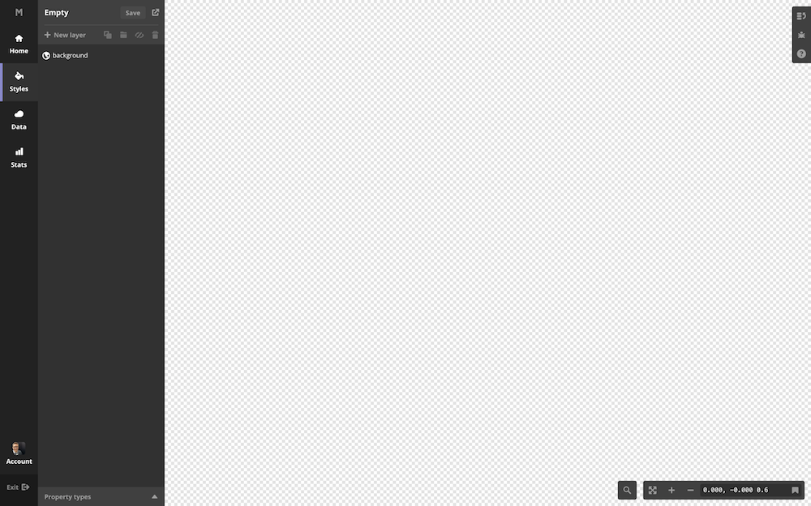
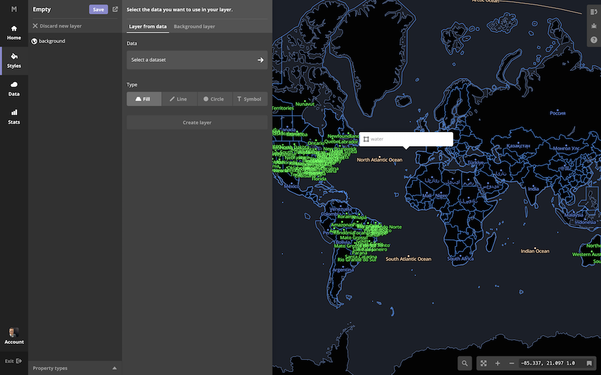
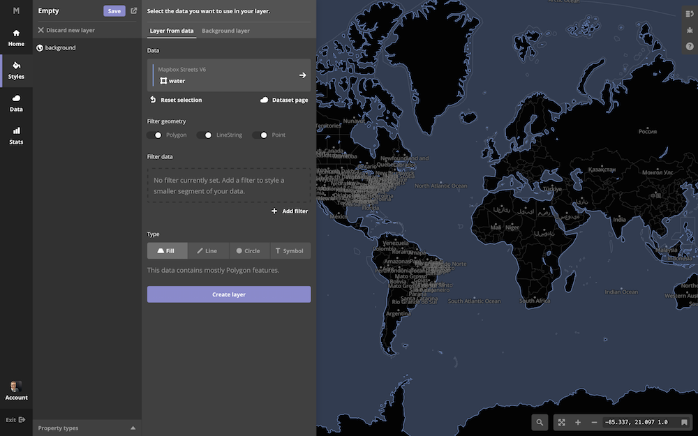
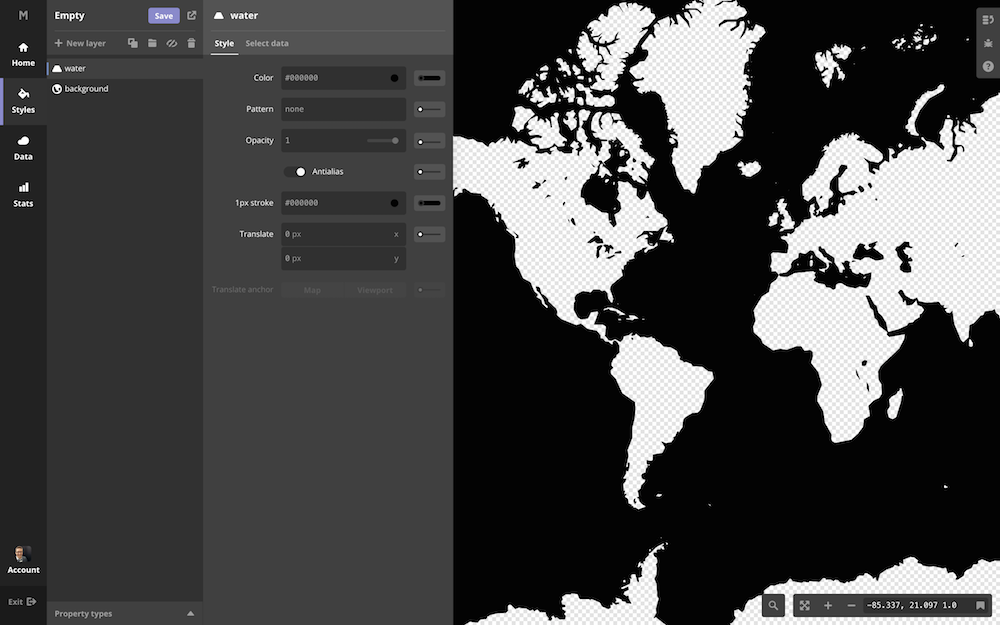
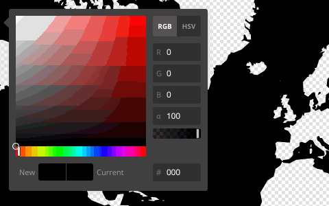
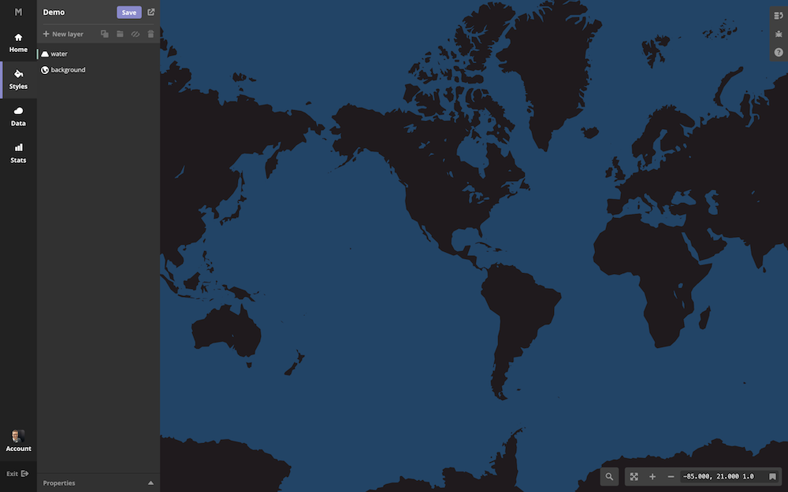

This is simultaneously a guide to designing a radical map using the new Mapbox Studio and an in-depth review of the latest cartographic tool from the open-source, OpenStreetMap powerhouse.
What is Mapbox Studio?
Mapbox Studio is a web-based application which allows you to quickly style a map of the entire world.
Let's unpack that
That statement is actually pretty f$#%ing amazing, and I don't want you to take it for granted. Simply put, this tool is unique in that it was literally impossible to achieve not that long ago.
When GIS first became a thing, it would have been nearly impossible to have enough computing power and storage space to make such a detailed map of the world. Let alone the fact that a worldwide, street-level dataset probably only existed in the halls of the world intelligence agencies.
Think about how crazy it was in 1996 when Mapquest launched. It was a revelation that you could use the internet to find directions between (most) any two places on the planet. But this was still the sole domain of the super-powerful internet companies.
When Steve Coast founded OpenStreetMap in 2005, we're starting to get the groundwork laid for everyone to be able to map the world, but not many people had the computing power, bandwith, and expertise to consume such a massive data source.
Now, in 2015, Mapbox has finally removed the last remaining technical hurdle. The entire workflow for making your own, customized map of the entire world is:
- Create an account
- Log in
- Launch Mapbox Studio
- Map.
With this perspective in mind, let's make a map.
Making a map
(Note: These screenshots were taken during the beta and may vary slightly from the current version.)
It's pretty simple to get started. Just create a new style, and then pick
from one of Mapbox's existing styles or start from
a blank source.

The blank source
It can be rather daunting to start from the ground up, but if you're wanting to really make something unique I think it's a must.
This doesn't look to dissimilar to a traditional GIS program. You launch it, and it sits there - empty - waiting for your data.
Selecting data
Thankfully (and miraculously, as mentioned previously), Mapbox has provided the data for the entire world for you to style (courtesy of OpenStreetMap).
Start by opening the "New Layer" pane. This changes the map view from "Cartography" to "X-Ray" mode, allowing you to see all the data behind the scenes.
You get a preview of the depth and breadth of information available at your fingertips. You just need to click on the data in the map that you want to style and hit "Select.""
Once a layer has been selected, the data is highlighted in the map. This will be especially helpful later when filters are required.
Go ahead and press "Create Layer" and the map switches back to Style mode.
Styling data
Now we get our first look at the map styling tools. Also, we can breathe a slight sigh of relief that our map is no longer blank.
Let's see what we have to work with.
Let's break down our toolbox.
- Color picker
- Pattern Picker
- Opacity Slider
- Antialias Toggle (a 1px outline)
- Notice the handy popup? Every descriptive text does that just in case you're wondering what a property does.
- Antialias Color Picker
- Translation Settings
That's a pretty standard set of tools, not a lot of mind-blowing stuff in the polygon styling toolbelt...
Oh, except did I mention...? Everything you do changes live?
Let's take another look at that color picker in action.
This is due to the amazing technology Mapbox uses to render the map in your browser. Basically, it uses your graphics card to render the map constantly at 60 frames per second. This allows for the cartographer to get instant feedback on their design, and for the user to never have to wait for the next zoom level to load. This is a gross oversimplification, so if you want to learn more about the underlying technology head over to the Mapbox blog.
Building the Style
Land
Let's keep building the map. We've got the water, let's add the land.
One important thing to note when creating your map is that your underlying background data (water and land), only the water is actual data. To save space, you style the land by styling the background of the map (i.e. the absence of water).
Countries
Let's add the country boundaries. This will give us a chance to highlight the built-in query tools.

When you select the admin layer, you get the entire unfiltered
dataset. I want to style only the land country boundaries, so I click the
add filter button to see what attributes can be queried out.

For this layer I only want to see level 2 (country), undisputed land boundaries. Let's look at the ways we can style lines.
This is a pretty standard set of line styling options. There are a couple
of options worth noting though. The gap width option is
nice for allowing you to have "casing" for your roads or
paths for example.
This is great for road casing. It gives a slight visual separation to the roads. (via Mapbox Streets style)
The blur setting is an interesting one that we'll check out next
So let's give our country lines the following settings:
color: #EF0
dasharray: [1,2]
That's nice, but it stays at width: 1px no matter how much
you zoom in. Let's make the line width vary with zoom level.
Gone are the days of CartoCSS where you'd have to set explicit
style breaks at integer zoom levels. ("back in my day...").
Now a function defines the way your style changes as you zoom.
This allows you to very quickly setup complex rules for your styles.
So our yellow dashed country boundaries are nice looking, but let's
kick'em up a notch!.
Duplicate
settings: